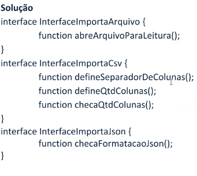

Solução com padrao projeto stratgegy
Categorizado como um padrão comportamental de desenvolvimento de software. De modo que delega as responsabilidades
adquiridas pelas entidades,
atribuindo, portanto, o comportamento.
- Open-Close: caso precise criar uma segunda classe, as modificações serão pequenas e fáceis, caso o código for
alterado uma vez,
existe uma grande probabilidade de ele ser alterado novamente e o OCP te ajudará a economizar tempo com isso.;
- 1 linguagem orientada a objeto :SIMULA-68;
- Substituiçao de Liskov (LSP): 1987
- Liskov é uma definição particular para o conceito de subtipo.
"Sempre que uma classe cliente esperar uma instância de uma classe base X, uma instância de uma subclasse Y de X
deve poder ser usada no seu lugar."
Em outras palavras: "Uma classe base deve poder ser substituída pela sua classe derivada."
Sem aplicar o princípio de Liskov a hierarquia de classes seria uma bagunça e os testes de unidade para a
superclasse nunca teriam sucesso para a subclasse.
- As classes filhas nunca devem quebrar definiçoes de tipo da classe pai/mae;
- Uma subclasse deve subscrever (poliformismo) os metodos de classe pai/mae de alguma forma ,que nao quebre a
funcionalidade da classe cliente;
EXEMPLO :

Interface Segregation :
- SRP (responsabilidade unica) se refere a atores e arquitetura de alto nivel. Principio aberto/fechado se refere ao
projeto de classe e extençoes
de recurso.
- O principio de Liskov trata de subtipagem e herança.
- O principio de segregação de interface (ISP)se referea lógicade negocios para a comunicação das classes
clientes.
- Primeira regra:nenhum codigo cliente deve ser forçado a depender de métodos que não utiliza (melhor ter varias
interfaces especificas do que uma única genérica)
- O ISP nos ensina a respeitar os codigos mais do que o necessário.
- Interfaces pertecema os seus codigos clientes e não as implementações. Protege-las de forma a atender melhor aos
codigos clientes. Podemos conhecer
ou não exatamente os codigos clientes mas quando pudermos devemos quebrar a interface em varias partes para que
atendam melhor as necessidades dos codigos.
Qual limite de interfaces ? : Tudo depende dos contextos , "bom senso" , voce deve entender esse equilibrio.
EXEMPLO:

SOLUÇÃO: Quanto melhor a base melhor cresce nosso software

DIP(principio de inversao de dependencia)
o DIP possui duas definições: (1) módulos de alto nível não devem depender de módulos de baixo nível e
ambos devem depender de abstrações;
e (2) abstrações não devem depender de detalhes, mas detalhes devem depender de abstrações.
O Princípio de Inversão de Dependência permite a criação de um código mais flexível e duradouro.
Permite que classes
dependam menos umas das outras, tornando-as bem definidas e reduzindo a necessidade de modificá-las devido a
alterações em outras classes. As classes passam a ser alteradas somente quando é realmente necessário.